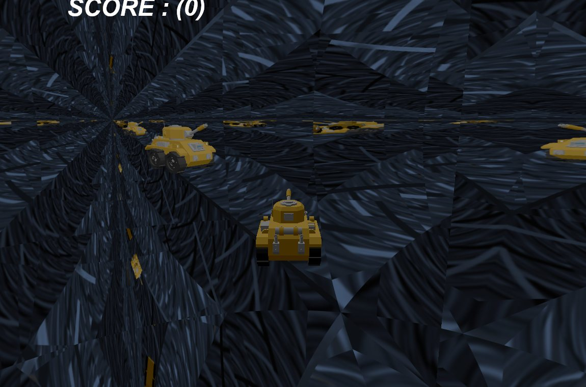

01 — Game게임
탱크를 몰고 지형과 물 위를 다니며 적을 쏩니다. 적 하나를 부수면 100점이고, 200점이 되면 점수 자리에 「YOU WIN!」이 뜹니다.

조작
| 입력 | 동작 |
|---|---|
| W / S | 전진 · 후진 |
| 마우스 이동 | 차체 회전 |
| 왼쪽 버튼 드래그 | 포신 위아래 (-70° ~ 20°) |
| 방향키 | 카메라 위치 조절 |
| Space | 누르는 동안 발사, 포구 화염, 스포트라이트 |
| F2 / F3 | 테셀레이션 고정 20 / 거리 기반 |
| F4 | 지형 와이어프레임 켜기 · 끄기 |
| F6 / F7 | 일반 차원 / 거울 차원으로 바로 이동 |
| F9 | 전체 화면 전환 |
플레이어 탱크는 모델에서 포신, 포탑, 바퀴 4개를 프레임 이름으로 찾아 따로 움직입니다. 이동하면 바퀴가 돌고, 드래그하면 포신만 기울어집니다.
맵
- 물. 높이 155에 깐 평면입니다. 정점 셰이더에서
y += sin(0.7t + 0.7x)·2.95 + cos(0.7t + 0.3z)·2.05로 물결을 만들고, UV 행렬을 매 프레임 밀어 텍스처가 흐르게 했습니다. 물 텍스처에 용암 텍스처의 빨간 채널을 35% 섞었습니다. 물결 수치와 용암 혼합은 제가 정했고, UV 행렬로 흐르게 하는 방식은 수업 예제를 바탕으로 했습니다. - 나무. 3D 모델 두 종(tree1a, tree2)을 번갈아 30그루 놓습니다. 위치는 무작위로 뽑되 지형 높이가 153보다 낮으면 다시 뽑아 물 위에는 놓지 않습니다.
- 수면 부유. 플레이어와 적 모두 지형 높이가 155 이하인 곳에 들어가면 높이 150~154 사이를 오르내리며 떠 있습니다.
수업 예제와 제 작업
수업 예제를 바탕으로
- DirectX 12 프레임워크 (LabProject08-1-2)
- 베지어 5×5 도메인 셰이더, 헐 셰이더의 모서리 중점 방식 틀
- 동적 큐브 매핑 (
CDynamicCubeMappingObject·Shader) - 스프라이트 시트 애니메이션 (
CMultiSpriteObject·AnimateRowColumn) - 지형 높이를 따라가는 콜백, 텍스처가 흐르는 물
제가 더한 것
- 거울 차원 전체 — 벽 6장 렌더 타깃(
_Cube클래스),Environment_RectPS, 진입 · 복귀, 렌더 분기 - 탱크 부품 조작, 적 배회 · 지형 정렬 · 파괴 연출, 충돌 반응, 점수
- 포구에 붙인 발사 화염과 발사 조명, 수면 부유
- 물결 수치와 용암 혼합, 테셀레이션 수치(40 → 4)와 노멀 보간
02 — Tessellation테셀레이션 지형
257×257 높이맵을 패치 441개로 나눠 GPU에서 쪼갭니다. 수업 예제의 베지어 패치 틀을 바탕으로 했고, 거리별 분할 수치와 노멀 보간을 제가 더했습니다.
패치 구조
패치 하나는 높이맵 13×13칸을 덮습니다. 그 안에서 3칸 간격으로 고른 제어점 25개(5×5)를 하나의 패치로 GPU에 보냅니다. 가로 · 세로 21개씩, 모두 441개입니다. 이웃 패치는 경계의 제어점 줄을 함께 씁니다.
도메인 셰이더는 4차 베른슈타인 가중치로 25점을 섞어 위치를 냅니다. 노멀도 같은 가중치로 보간해 조명에 씁니다.
분할 계수
F3을 누르면 거리 기반으로 바뀝니다. 모서리 계수는 그 모서리 양 끝 제어점의 중점에서, 내부 계수는 25점 평균 위치에서 카메라까지 거리를 잽니다. 거리 10 이하는 40, 500 이상은 4이고 그 사이는 직선으로 줄어듭니다. 분할 방식은 integer입니다. F3을 누르기 전과 F2에서는 모든 계수가 20으로 고정입니다.
float CalculateTessFactor(float3 f3Position)
{
float fDistToCamera = distance(f3Position, gvCameraPosition);
float s = saturate((fDistToCamera - 10.0f) / (500.0f - 10.0f));
return (lerp(40.0f, 4.0f, s));
}
// HSTerrainTessellationConstant — F3(DYNAMIC_TESSELLATION)일 때
float3 e0 = 0.5f * (input[0].positionW + input[4].positionW); // 위 모서리
float3 e1 = 0.5f * (input[0].positionW + input[20].positionW); // 왼쪽 모서리
float3 e2 = 0.5f * (input[4].positionW + input[24].positionW); // 오른쪽
float3 e3 = 0.5f * (input[20].positionW + input[24].positionW); // 아래
output.fTessEdges[0] = CalculateTessFactor(e0); // [0]은 u=0(왼쪽) 자리
output.fTessEdges[1] = CalculateTessFactor(e1); // [1]은 v=0(위) 자리
// … [2], [3], 내부 계수(25점 평균 위치)이웃 패치와 계수 맞추기
모서리 중점에서 거리를 재는 건 이웃 패치와 같은 점에서 재야 공유 모서리의 계수가 맞기 때문입니다. 공유 모서리의 곡선은 같은 제어점 다섯 개로 정해지므로, 계수까지 같으면 양쪽 꼭짓점이 정확히 겹칩니다.
그런데 D3D12 사각 패치의 계수 순서는 [0] 왼쪽(u=0), [1] 위(v=0), [2] 오른쪽, [3] 아래입니다. 코드는 [0]에 위 모서리 중점을, [1]에 왼쪽 모서리 중점을 넣어 두 칸이 바뀌어 있습니다.
| 계수 | D3D가 읽는 모서리 | 코드가 넣는 중점 | 결과 |
|---|---|---|---|
| [0] | 왼쪽 (u=0) | 위 모서리 (0–4) | 바뀜 |
| [1] | 위 (v=0) | 왼쪽 모서리 (0–20) | 바뀜 |
| [2] | 오른쪽 (u=1) | 오른쪽 모서리 (4–24) | 맞음 |
| [3] | 아래 (v=1) | 아래 모서리 (20–24) | 맞음 |
그래서 거리 기반 모드에서는 패치의 왼쪽 · 위 모서리가 이웃과 다른 점에서 거리를 잽니다. 패치 한 변이 96 단위라 두 중점은 수평으로 약 68 단위 떨어져 있고, 그만큼 계수가 몇 단계 달라질 수 있습니다. 계수가 다르면 같은 곡선을 다른 칸 수로 나눠 경계에 틈이 생길 수 있습니다. 코드로 따져 본 결과이고, 실행 화면에서 틈을 확인하지는 않았습니다. 고정 20 모드에서는 모든 계수가 같아 이 문제가 없습니다.
03 — Reflection반사 구와 거울 차원
일반 차원에는 주변을 비추는 반사 구가 있고, 구에 닿으면 사방이 거울인 방으로 이동합니다. 반사 구는 수업 예제의 동적 큐브 매핑을 바탕으로 했고, 거울 방은 제가 더했습니다.
반사 구
지형 중앙 근처, 지면에서 80 위에 반지름 100인 구를 둡니다. 매 프레임 구 중심에 FOV 90° 카메라 6대를 놓고 씬을 6번 그려 256×256 큐브맵 6면을 채웁니다. 픽셀 셰이더는 시선의 반사 벡터로 큐브맵을 샘플링합니다. 물은 Scene::Render 밖에서 따로 그리기 때문에 구에 비치지 않습니다.
거울 방
방은 한 변이 약 200인 상자이고 벽 6장이 모두 거울입니다. 큐브맵 한 장 대신 벽마다 1024×1024 2D 렌더 타깃을 하나씩 둡니다. 벽 위치에 FOV 85° 카메라를 두고 방 안쪽을 그린 뒤, 벽 셰이더(Environment_RectPS)가 반사 벡터를 그 벽 면의 UV로 바꿔 샘플링합니다.
벽을 그릴 때 다른 벽에는 이미 그려 둔 결과가 붙어 있습니다. 그래서 프레임이 지날 때마다 반사 속 반사가 한 겹씩 깊어지고, 탱크가 여러 겹으로 보입니다(01절 사진). 거울 방에서는 하늘, 플레이어, 포구 화염, 벽만 그리고 지형 · 적 · 나무와 충돌 검사는 건너뜁니다.
진입과 복귀
- 진입 — 플레이어 충돌 구가 반사 구의 충돌 구(반지름 95)에 닿으면 방 중앙, 높이 162로 옮깁니다. 방 안에서는 높이 150~154를 오르내리며 떠 있습니다.
- 복귀 — 옆벽 4장의 OOBB(두께 1)에 닿으면 일반 차원의 정해진 지점(지형 가로 · 세로 40% 지점) 높이 300으로 돌아갑니다. 그 뒤 지형 높이까지 프레임마다 2씩 내려옵니다. 천장과 바닥에는 OOBB가 없습니다.
- 강제 전환 — F7은 거울 방으로, F6은 일반 차원으로 같은 위치를 써서 바로 옮깁니다.
프레임당 렌더 횟수
| 항목 | 일반 차원 | 거울 차원 |
|---|---|---|
| 추가 렌더 | 씬 6번 (큐브맵 6면) | 씬 6번 (벽 6장) |
| 렌더 타깃 | 256×256 × 6 (큐브 텍스처 1장) | 1024×1024 × 6 (2D 텍스처 6장) |
| 추가 렌더 픽셀 수 | 약 39만 (계산값) | 약 629만, 16배 (계산값) |
| 추가 렌더에서 그리는 것 | 물을 뺀 씬 전체 | 하늘 · 플레이어 · 포구 화염 · 벽 |
| 추가 렌더의 제출 · GPU 대기 | 1번 (6면을 한 번에 제출) | 6번 (벽마다 제출하고 기다림) |
| 화면 렌더 | 1번 | 1번 |
거울 모드는 벽 하나를 그릴 때마다 커맨드 리스트를 닫아 제출하고, GPU가 끝날 때까지 기다린 뒤 같은 할당자를 다시 씁니다. 프레임 시간은 재지 않았습니다. 위 숫자는 코드로 센 값이고, 타이머에는 60fps 상한이 걸려 있습니다.
04 — Combat적과 전투
적 AI, 파괴 연출, 충돌 반응, 점수는 제가 더한 부분입니다. 지형 높이를 따라가는 방식은 수업 예제의 콜백을 바탕으로 했습니다.
배회
- 탱크와 트럭을 번갈아 10대 놓습니다. 시작 위치는 지형 높이 153 이상인 곳에서 무작위로 고릅니다.
- 1~3초마다 -30° ~ 30° 사이에서 목표 각을 새로 뽑고 초당 10°로 돕니다. 매 프레임 0.3씩 앞으로 갑니다.
- 맵 경계(1 ~ 1998)를 벗어나면 180° 돌아섭니다. 나무에 닿으면 전진을 절반으로 줄이고 옆으로 비켜 갑니다.
지형 정렬과 부유
- 적의 위쪽 벡터와 지형 법선 사이 각도를 구해, 매 프레임 그 각의 10%만큼 기울입니다.
- 지형 높이가 155 이하인 곳에서는 물 위로 보고 법선을 위쪽으로 둔 채 높이 150~154를 초당 7로 오르내립니다.
파괴 연출과 점수
- 총알 구(반지름 2)와 적 구(탱크 10, 트럭 15)로 맞았는지 봅니다. 한 번 맞을 때마다 체력이 1 줄고, 50번 맞으면 부서집니다.
- 부서지면 몸체 · 포 · 바퀴 같은 부품이 피보나치 반구 샘플링으로 미리 만든 방향을 따라 1초 동안 흩어지며 돕니다. 그 뒤 적을 끕니다.
- 1대에 100점, 200점이면 Direct2D로 「YOU WIN!」을 씁니다.
충돌 반응
- 플레이어가 나무 OOBB에 닿으면 속도가 0.7에서 0.35로 줄고, 왼쪽이나 오른쪽으로 0.35씩 비켜 갑니다. 방향은 무작위입니다.
- 적에 닿은 채로 이동하면 입력과 반대 방향으로 0.1씩 밀립니다. 닿아 있는 동안 적은 멈춥니다.
- 거울 방에서는 충돌 검사를 하지 않습니다.
발사와 포구 화염
- 총알은 1발을 돌려 씁니다. 속도 400, 사거리 100이라 약 0.25초 뒤 다시 쏠 수 있습니다.
- Space를 누르는 동안 8×8, 6×6 스프라이트 시트 두 장을 포구 앞에 붙이고 카메라 쪽으로 돌립니다. 한 바퀴는 약 1.5초입니다.
- 같은 동안 플레이어 위치에서 바라보는 방향으로 스포트라이트를 켭니다.
스프라이트 시트를 넘기는 부분(AnimateRowColumn)은 수업 예제를 바탕으로 했고, 포구 위치에 붙이고 발사 입력과 조명에 묶은 것은 제가 더했습니다.
05 — Limits한계와 다시 만든다면
| 문제 | 영향 | 다시 만든다면 |
|---|---|---|
| 테셀레이션 계수 순서 | [0] · [1]에 들어가는 모서리가 바뀌어 거리 기반 모드에서 왼쪽 · 위 모서리 계수가 이웃과 다를 수 있습니다. 틈은 화면에서 확인하지 않았습니다(02절). | [0]에 0–20, [1]에 0–4 중점을 넣고 F4 와이어프레임으로 경계를 확인 |
| 노멀 입력 2성분 | 테셀레이션 입력 레이아웃의 NORMAL이 R32G32_FLOAT라 z가 0으로 들어옵니다. z 방향 기울기가 지형 조명에 반영되지 않습니다. | R32G32B32_FLOAT로 바꾸기 |
| 배회 타이머 공유 | 타이머가 함수 안 static이라 모든 적이 하나를 함께 씁니다. 적마다 시간을 더해 타이머가 적 수만큼 빨리 차고, 찰 때 그 순간 처리 중인 적 하나만 방향을 바꿉니다. 회전도 늘 한쪽으로만 돕니다. | 타이머를 적마다 멤버로 두고, 목표 각과의 차이 부호대로 회전 |
| 거울 모드 GPU 대기 6번 | 1024² 벽 6장을 따로 제출하고 매번 기다려 CPU와 GPU가 번갈아 쉽니다. | 벽 6장을 커맨드 리스트 하나로 묶어 한 번 제출, 해상도를 낮추거나 프레임마다 벽 몇 장씩 나눠 갱신 |
| 총알 1발 | 총알이 사라질 때까지 다시 쏠 수 없습니다. | 풀을 늘리고 발사 간격을 따로 관리 |
| 프레임 비용 미측정 | 일반 · 거울 모드의 프레임 시간을 재지 않았습니다. 03절의 횟수와 픽셀 수는 코드로 센 값입니다. | GPU 타임스탬프 쿼리로 모드별 패스 시간을 재고 비교 |